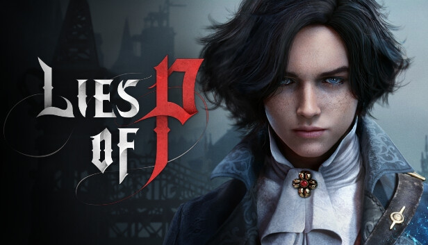

Lies Of P - O jogo que surpreendeu!
Lies of P foi uma das maiores surpresas que um jogo poderia proporcionar. Com uma atmosfera sombria, uma história envolvente e um mundo cheio de mistérios, o jogo consegue prender a atenção do início ao fim. Sua inspiração em Pinóquio é transformada em algo completamente diferente, criando uma experiência única e marcante. Além da ambientação incrível, o combate é desafiador e extremamente satisfatório. Cada inimigo e cada chefe fazem o jogador aprender com seus próprios erros, tornando cada vitória ainda mais especial. Lies of P não é apenas um excelente jogo inspirado em Bloodborne; ele consegue construir sua própria identidade e mostrar que é possível surpreender até mesmo quem já conhece muito bem o gênero.
